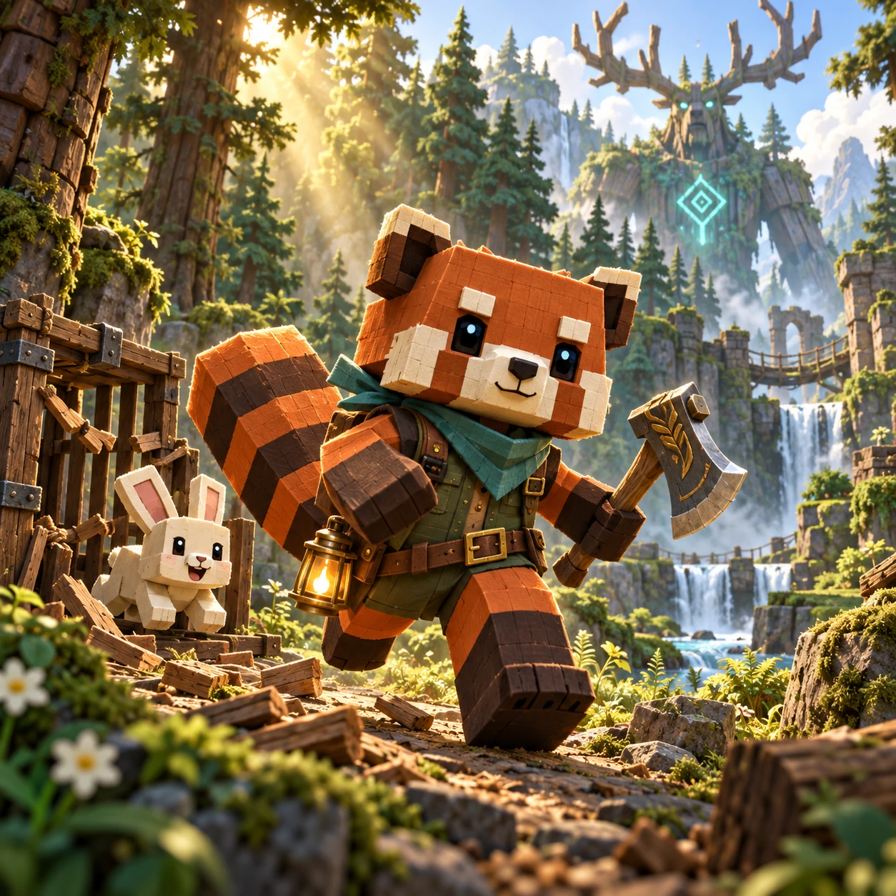

How to play
Health increases both current and maximum health. Gains save immediately, even if you lose or leave. Trees regrow after 12 seconds; enemies return after 16 seconds with a warning. Every stage has a guardian: grow stronger, finish all objectives, defeat the guardian and reach the gate.
Recover 1 HP every 3 seconds. Enemy rewards permanently add 0.1 to each recovery; guardians add 0.3. No recovery while paused or above maximum HP. Enemies can reward health, attack or regeneration.
Trees always take 5 hits, each dealing 1 damage regardless of attack power. Only fallen trees show a clock and countdown at their original position.
Drag to move · stop near a target to chop · Space to dash
Frequently Asked Questions
How do I finish a mission?
Complete the objectives shown, defeat the guardian, then reach the golden exit. In protection missions, your companion must survive too.
How do I move and attack?
Drag the joystick or hold and drag in the arena to steer; release to stop. Use Dash or press Space to dodge. The Ranger Axe attacks nearby targets automatically.
How do I deal with guardian attacks?
Leave the warning area before the attack lands. Flank armored enemies or interrupt them; destroy the purple totem before attacking Mosswitch.
What progress is saved?
Mission unlocks and permanent growth stay in this browser. Losing or leaving a run keeps those gains; clearing the browser’s site data removes the save.